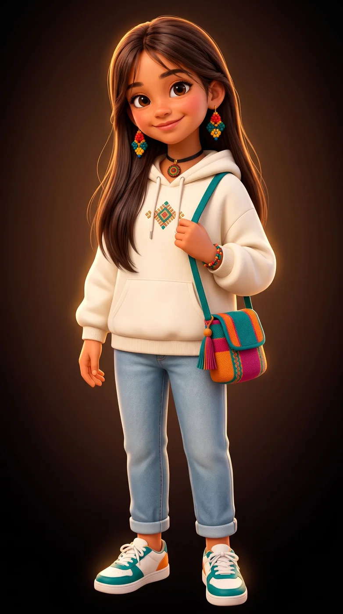
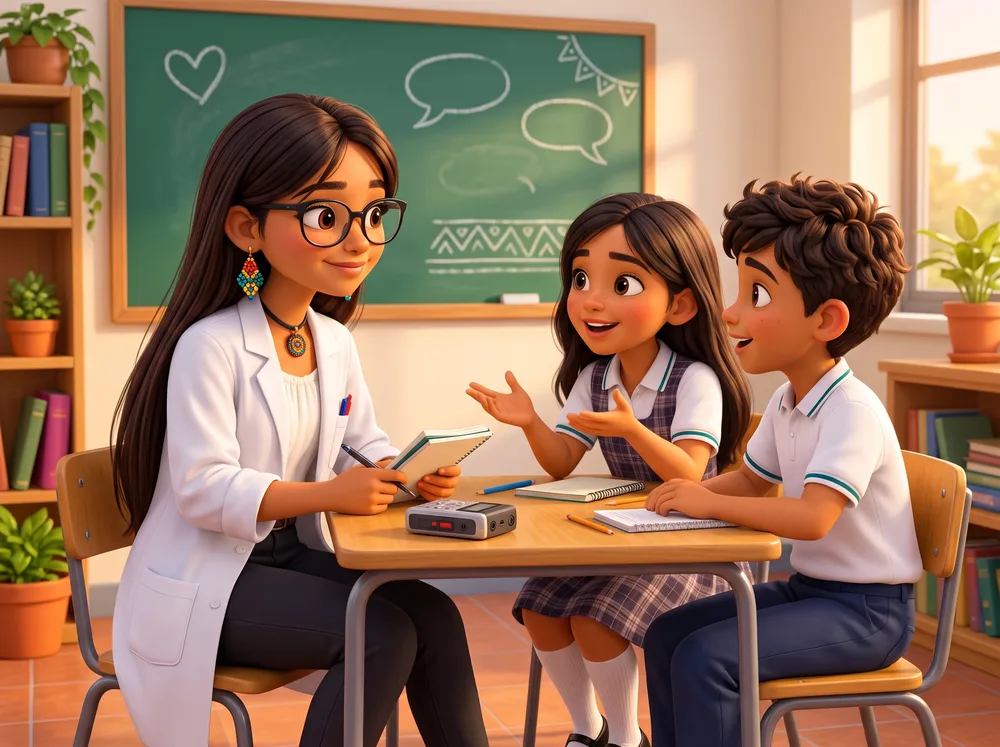
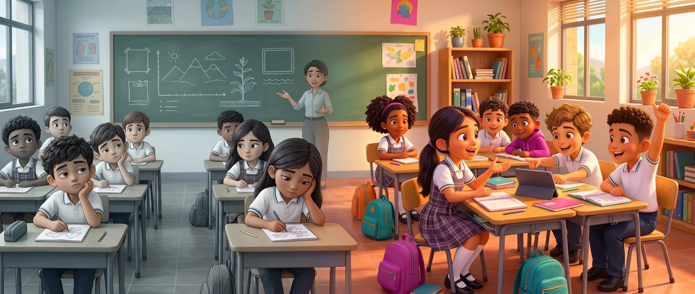
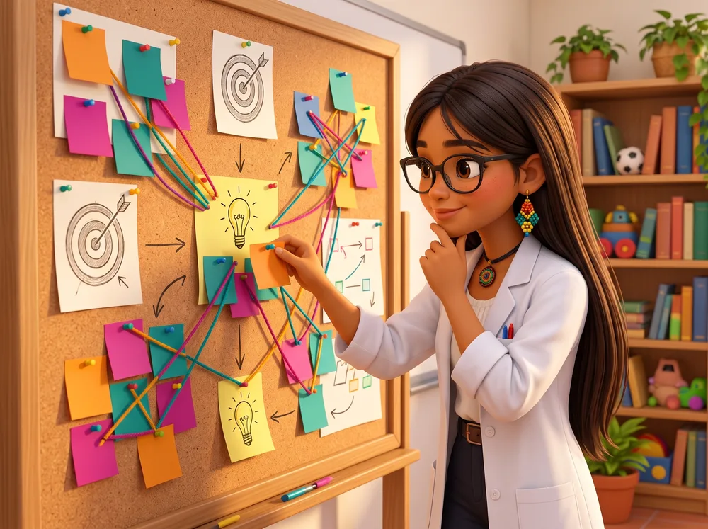
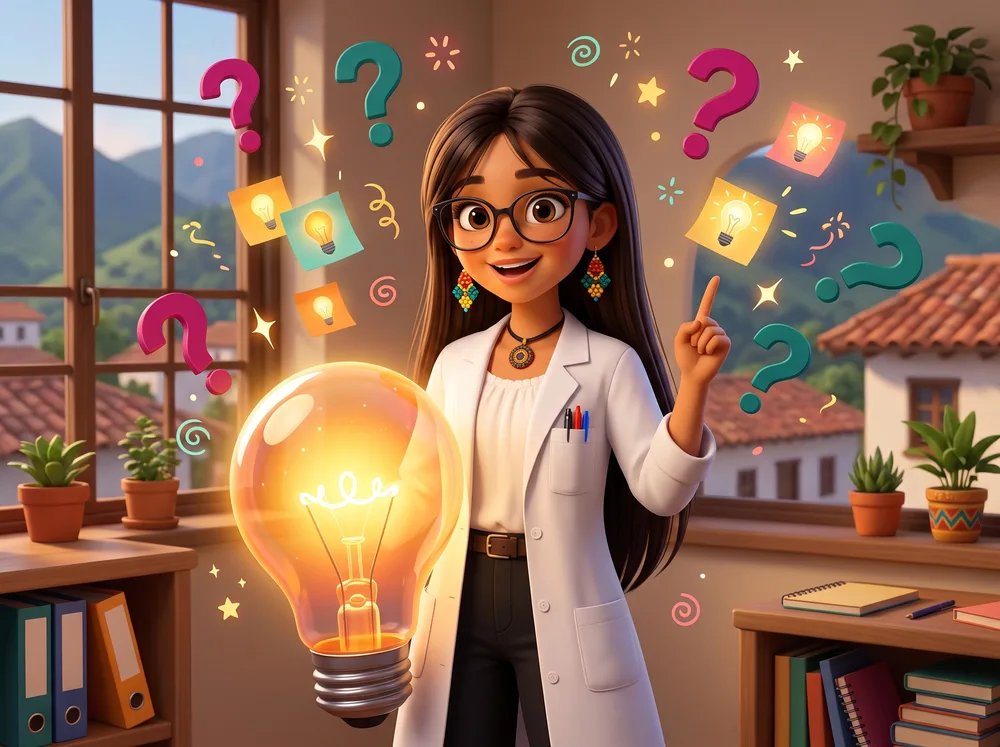
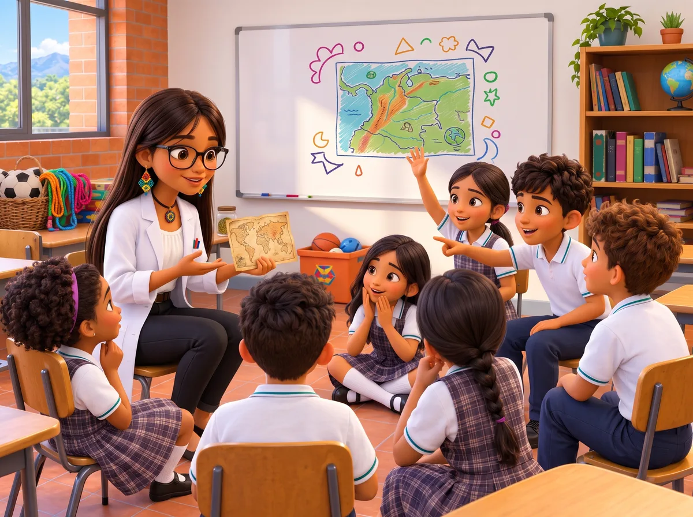
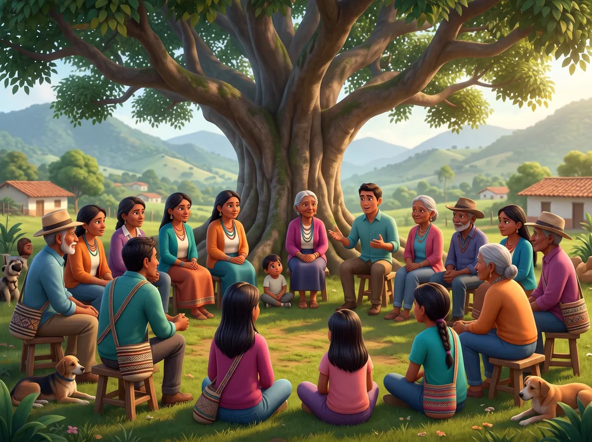
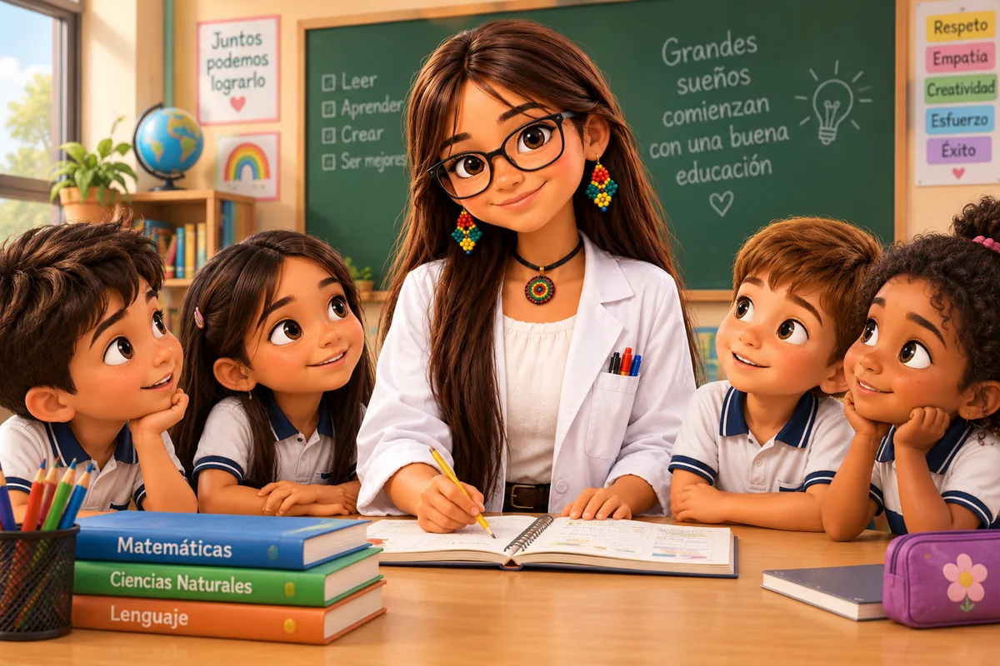

Cómo leer esta infografía
Los instrumentos del Ciclo 1 aún no se han aplicado. Las cifras y citas provienen de fuentes publicadas, y ninguna cita corresponde a participantes de la sede A.
D dato con fuente S supuesto por validar
Hipermedia lúdica con narrativas inspiradas en cosmovisiones de pueblos originarios para fortalecer el pensamiento ciudadano en 4.º y 5.º de primaria
Seminario de profundización I · Tecnología educativa: Gamificación
Módulo 1 · Fundamentos de la gamificación educativa

Cifras, patrones, voces de estudios, proto-personas, mapas de empatía y journey map.
7 etapas · 3 proto-personas 02Seis insights, su priorización, el desafío, los puntos de vista y las preguntas “¿Cómo podríamos…?”.
7 etapas · 6 preguntas HMW 03Cuándo se confirman los supuestos en la sede A, de noviembre de 2026 a enero de 2027.
4 instrumentos · Ciclo 1Los instrumentos del Ciclo 1 aún no se han aplicado. Las cifras y citas provienen de fuentes publicadas, y ninguna cita corresponde a participantes de la sede A.
D dato con fuente S supuesto por validar
Son personas elaboradas sin investigación nueva, a partir de lo que el equipo cree sobre sus usuarios. Se tratan como hipótesis y se reemplazarán por arquetipos con los datos de la sede (Laubheimer, 2020). Los nombres son ficticios.

Cuándo se recoge en la sede la información que confirmará o descartará los supuestos de esta entrega. Toque un círculo para ver el detalle.

Conocer qué hacen, dicen, piensan y sienten estudiantes y docentes de 4.º y 5.º antes de diseñar.

Estudiantes de 5.º en el nivel 1 de Pensamiento Ciudadano. Fuente: Icfes (2024a, pp. 52-53).
Fuentes: DANE (2024, p. 24), sedes con algún bien o servicio TIC; Icfes (2024a, pp. 111-112), estudiantes de 5.º.
En aulas de primaria estudiadas, los docentes escriben conceptos en el tablero y los estudiantes los pasan al cuaderno.
Pinilla Marín (2023); Herrera Mantilla y Tuay Sigua (2023)Niños no indígenas de 5.º los imaginaban lejanos. La curiosidad creció cuando el tema llegó con juegos y diálogos.
Ortiz Gil et al. (2022); Rivera Reyes (2012)En las sedes rurales y oficiales es más común tener computadores o tabletas que internet.
DANE (2024); ExE (2024)Se valoran más los escenarios realistas y las decisiones con consecuencias que los puntos y las insignias.
Daza Ibáñez et al. (2025); Arias-Delgado (2023a)
Agrupar lo encontrado, ver dónde están las necesidades y convertirlas en preguntas para idear.


Relación alta y evidencia sólida. Pasan a la fase de idear.
Se confirma en las entrevistas con docentes.
Se confirma con la observación de aula y el inventario de equipos.
Los estudiantes de 4.º y 5.º de la sede A necesitan más ocasiones, dentro de la clase, para analizar situaciones cercanas a su vida, conocer cómo las ven personas con otras visiones del mundo, entre ellas las de pueblos originarios, y justificar sus decisiones con los equipos y la conexión que tiene el aula.

Necesitadecidir qué hacer ante situaciones de su colegio y ver qué pasa con su decisión.
Porqueen clase suele copiar definiciones y se anima cuando puede elegir con su grupo.
Necesitaescuchar las situaciones, avanzar a su ritmo y opinar desde su pareja de trabajo.
Porquelos textos largos y hablar ante 38 compañeros lo dejan fuera de la discusión.
Necesitaun recurso que funcione con los equipos de la sede y le muestre por qué deciden sus estudiantes.
Porqueteme perder la clase si falla la conexión y hoy solo ve si la respuesta es correcta.

Ilustración pendiente del protocolo de validación cultural.Necesitanque su visión del mundo aparezca como una manera actual de razonar y decidir.
Porquelos textos escolares han reducido “la diversidad a caricaturas del afro y del indígena” (Rivera Reyes, 2012, p. 109).
